")
Defence - Armour types
Introduction
Below is a list of armour available and a short description of each.
Melee Armour
| Armour | Notes | |
 Medium Helmets (Bronze, iron, steel, black, white (m), mithril, adamant, rune, dragon (m)) |
Medium helmets offer some light protection from most combat forms, but also do little to inhibit using any combat style. This makes them a good choice for players who favour melee, but want the opportunity to use Magic and Ranged. |
|
 Full Helmets (Bronze, iron, steel, black, white (m), mithril, adamant, rune, dragon (m)) |
Full helmets encase the whole of the wearer's head and protects them from many dangers. As with almost all metal armour, though, Magic is a particular danger. Unlike the medium helmet, a full helmet imposes larger negative modifiers to Magic and Ranged attacks. |
|
 Chainmail (Bronze, iron, steel, black, white (m), mithril, adamant, rune, dragon (m)) |
Chainmail is made up of small rings linked together. It is particularly useful for deflecting slashing weapons and absorbing the impact of crush attacks. Chainmail is weak against stabbing weapons as small pointy blades can pierce the rings. Chainmail is quite flexible and so does not cause any disadvantages while using Ranged weapons. Mages will tend to find the armour gets slightly in the way of some of the finer spell casting techniques. |
|
 Plate Armour (Bronze, iron, steel, black, white (m), mithril, adamant, rune, dragon (m)) |
Plate armour is much heavier and stronger than chain. Rangers and mages find it incredibly difficult to use plate armour in conjunction with firing arrows or casting spells. Plate armour is weakest against crushing damage, as it cannot absorb the impact as well as it can absorb slashing or stabbing attacks. |
|
![[image]](../../img/main/kbase/armour/barrows/guthan_body.gif) 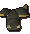 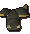![[image]](../../img/main/kbase/armour/barrows/verac_body.gif) Barrows Armour (m) (Dharok, Guthan, Torag, Verac) |
Barrows armour is said to be both ancient and powerful, and is obtained from the Barrows. If you are lucky enough to receive all the items from one of the brothers' armour sets (including the weapon), you'll be rewarded with a set effect. For more information on the set effects, please refer to the Barrows Reward page. Verac's armour also confers a hefty Prayer bonus. |
|
 Square Shields (Bronze, iron, steel, black, white (m), mithril, adamant, rune, dragon (m)) |
The square shield is an excellent option for any meleer, having bonuses only slightly less than that of a kite shield. The square shield is slightly more vulnerable to crush attacks. |
|
| 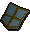 Kiteshields (Bronze, iron, steel, black, white (m), mithril, adamant, rune) |
Kiteshields offer better Defence than a square shield, although like most heavier armour it is awkward to use in combination with Magic and Ranged. Kiteshields are marginally weaker against stabbing attacks. |
|
 Crystal Shield (m) |
The crystal shield can only be used once you have completed the Roving Elves quest and have 50 Agility. The crystal shield is especially good at defending against Ranged attacks, but provides little protection from Magic. As the shield protects you from damage, it will weaken, until it eventually turns back into the crystal seed from which it was grown. |
|
![[image]](../../img/main/kbase/weapons/melee/tzhaar/tzhaarshield.gif) TokTz-Ket-Xil (m) |
The TzHaar TokTz-Ket-Xil provides good Defence, roughly equivalent to a rune kite shield. The extra advantage it confers, though, is that it offers a +5 bonus to Strength and a sizeable Ranged Defence bonus. |
|
![[image]](../../img/main/kbase/items/quests/antidragon_shield.gif) Anti-dragon Shield |
The anti-dragon shield does not provide much by way of armour, but it is invaluable when fighting dragons as it protects against most of their potentially devastating dragonfire. With the addition of a draconic visage it becomes the awesome dragonfire shield. |
|
![[image]](../../img/main/kbase/armour/melee/dragonfire/dragonfire_shield.gif) Dragonfire Shield (m) |
The dragonfire shield is an outstanding piece of equipment as it provides astounding defence along with the benefits of an anti-dragon shield. In order to reach its pinnacle it must be charged by absorbing dragonfire, which you can later discharge against your foes. Click here to read more about the dragonfire shield. |
|
![[image]](../../img/main/kbase/skills/dungeoneering/items/reward/chaotic_kiteshield.gif) ![[image]](../../img/main/kbase/skills/dungeoneering/items/reward/eagle_eye_kiteshield.gif) ![[image]](../../img/main/kbase/skills/dungeoneering/items/reward/farseer_kiteshield.gif) Dungeoneering shields (m) |
The three reward shields of Daemonheim 'soak' up damage from any attack that would have hit for 200 life points or more. Each shield offers slightly different variations of this same ability, but will soak up to 20% of damage from a particular damage type. The farseer kiteshield, for example, soaks up to 10% of all received magic damage and up to 20% of all received melee damage. Ranged damage is not soaked up at all. |
|
![[image]](../../img/main/kbase/armour/melee/fris/yakhide_torso.gif) ![[image]](../../img/main/kbase/armour/melee/fris/yakhide_legs.gif) ![[image]](../../img/main/kbase/armour/melee/fris/roundshield.gif) Yak-hide (m) |
The yaks bred on Neitiznot are reknowned for their toughness and hardy disposition. Although yak-hide is not a traditional melee armour, it has a remarkable design that renders the wearer much less vulnerable to the rocks hurled by ice trolls. |
|
![[image]](../../img/main/kbase/armour/melee/rockshelllegs.gif) ![[image]](../../img/main/kbase/armour/melee/rockshellboots.gif) ![[image]](../../img/main/kbase/armour/melee/rockshellgloves.gif) Rockshell Armour (m) |
Fremennik warriors who slay a great number of dagannoths beneath Waterbirth Island will inevitably begin wearing parts of their prey into combat. Rockshell armour offers protection comparable to rune armour. |
|
![[image]](../../img/main/kbase/armour/melee/granite_shield.gif) ![[image]](../../img/main/kbase/armour/melee/granite_legs.gif) ![[image]](../../img/main/kbase/armour/melee/granite_helm.gif) ![[image]](../../img/main/kbase/armour/melee/granite_body.gif) Granite Armour (m) |
Granite armour is a tough and resilient armour, requiring not only 50 Defence, but 50 Strength as well. Granite shows increased statistical improvements over that of rune. As granite is a very solid rock, it boasts an impressive Defence against Ranged attacks. |
|
![[image]](../../img/main/kbase/armour/melee/trail_items/fighter_helm.gif) ![[image]](../../img/main/kbase/armour/melee/trail_items/fighter_shield.gif) ![[image]](../../img/main/kbase/armour/melee/trail_items/silver_plate_body.gif) ![[image]](../../img/main/kbase/armour/melee/trail_items/silver_plate_legs.gif) Third Age Armour (m) |
Armour from the Third Age is incredibly rare and incredibly tough. As a full set, it offers the greatest protection available to a melee fighter. Note, however, that it incorporates a shield which the Barrows sets do not, and with a good shield Barrows armour can equal or exceed Third Age armour's Defence bonuses. | |
![[image]](../../img/main/kbase/armour/melee/godwars/bandos_chestplate.gif) ![[image]](../../img/main/kbase/armour/melee/godwars/bandos_tassets.gif) ![[image]](../../img/main/kbase/armour/melee/godwars/bandos_boots.gif) Bandos's Armour (m) |
Bandos is a god of battle whose followers love little more than seeing their foes fall before them. The armour given to his mightiest warriors provides excellent Defence - not to mention that it makes its wearer look as intimidating as an ork on the rampage. | |
![[image]](../../img/main/kbase/combat/pvp/member/full_helm.gif) ![[image]](../../img/main/kbase/combat/pvp/member/platebody.gif) ![[image]](../../img/main/kbase/combat/pvp/member/platelegs.gif) ![[image]](../../img/main/kbase/combat/pvp/member/chainbody.gif) ![[image]](../../img/main/kbase/combat/pvp/member/plateskirt.gif) Statius's and Vesta's Armour (m) |
In the ancient days when great heroes walked the world and shed their foes' blood in the violence of the god wars, Statius and Vesta were two of the mightiest. Their armour feels the call of bloodshed even today. Fortunately for those who face an enemy wearing their armour, it decays rapidly. |
Ranged Armour
| Armour | Notes | |
    Leather (Leather, hardened, studded) |
Leather tends to be very weak armour, but can be improved by studding the leather or hardening it. Leather is more resistant to crush attacks and weaker against stab attacks, but its flexibility makes it ideal for use by rangers. Unlike most melee armour, leather armour confers a slight Defence bonus against Magic attacks. |
|
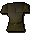  Frog-leather (m) |
The Dorgeshuun goblins have long been separated from the other races of RuneScape, and their supplies of traditional leather are obviously nonexistent. By way of replacement, they have mastered the art of toughening giant frogs' skin for use as a decent armour. It is far superior to ordinary leather, but slightly less durable than snakeskin. |
|
 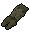 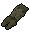  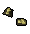 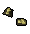Snakeskin (m) |
Snakeskin is a popular form of Ranged armour for those who want as close to a full set of one type of armour as possible. It is better than any form of ordinary leather but pales in comparison to dragonhide. |
|
 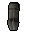 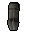   Spined Armour (m) |
Parts of monsters can be harvested from the dagannoth beasts on Waterbirth Island and these can then be crafted into spined armour. This is a good medium-level armour as it offers decent protection from crush attacks. |
|
 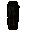 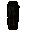Dragonhide Armour (Green, blue (m), red (m), black (m)) |
The same applies to dragonhide armour, although it is much stronger. The magic of dragons makes it very useful when defending against spells and magical effects. Unfortunately, this tends to interfere with the wearer's ability to use Magic. |
|
 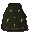 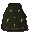 Karil's Armour (m) |
Karil's armour, both ancient and powerful, can be obtained from playing the Barrows. If you are lucky enough to receive Karil's armour and weapon, you will be rewarded with a set effect. For more information on the set effects, please refer to the Barrows Reward page. |
|
    Third Age Armour (m) |
Third Age armour offers defence comparable to black dragonhide, but with the added advantage of an excellent coif. The combined Ranged attack bonus should not be sniffed at! Of course, Third Age armour is anything but common, and many rangers settle for black dragonhide. |
|
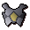 Armadyl's Armour (m) |
Armadyl's soldiers live to uphold order and go to battle against the forces of chaos and anarchy. As a proponent of the strike from afar, it is unsurprising that Armadyl's armour is designed for rangers - and as such, it is probably the most desirable equipment for those who have mastered the art of shooting a coin from two hundred paces. |
|
   Morrigan's Armour (m) |
Morrigan was a terrifying ranger to witness on the battlefield, choosing to hurl javelins and axes into the enemy with extraordinary passion and dark shadows at her heels. Her armour survives to this day, although decays rapidly. |
Mage Armour
| Armour | Notes | |
![[image]](../../img/main/kbase/armour/mage/wizardhat.gif) ![[image]](../../img/main/kbase/armour/mage/magerobe.gif) ![[image]](../../img/main/kbase/armour/mage/mageboots.gif) Mage Robes |
Mage robes offer no extra Defence against Ranged or melee combat, but do give an advantage for spellcasting and defending against Magic. |
|
![[image]](../../img/main/kbase/armour/mage/splitbarktop1.gif) ![[image]](../../img/main/kbase/armour/mage/splitbarkbottom1.gif) ![[image]](../../img/main/kbase/armour/mage/splitbarkhat1.gif) ![[image]](../../img/main/kbase/armour/mage/splitbarkboots1.gif) ![[image]](../../img/main/kbase/armour/mage/splitbarkgloves1.gif) Splitbark Armour (m) |
Splitbark armour offers Defence against both Magic and melee combat, and also gives a spell-casting bonus. However, it gives no bonuses to Defence against Ranged combat and has minor penalties to the use of Ranged attacks. You can find the components of this armour by playing the Shades of Mort'ton. |
|
![[image]](../../img/main/kbase/armour/mage/mysticrobe.gif) ![[image]](../../img/main/kbase/armour/mage/mysticbottom.gif) ![[image]](../../img/main/kbase/armour/mage/mystichat.gif) ![[image]](../../img/main/kbase/armour/mage/mysticboots.gif) ![[image]](../../img/main/kbase/armour/mage/mysticgloves.gif) Mystic Robes (m) |
Mystic robes, like mage robes, offer no extra Defence against Ranged or melee combat. However, they give a bigger advantage to casting and defending against Magic. |
|
![[image]](../../img/main/kbase/armour/mage/infinity_robetop.gif) ![[image]](../../img/main/kbase/armour/mage/infinity_robebottom.gif) ![[image]](../../img/main/kbase/armour/mage/infinity_hat.gif) ![[image]](../../img/main/kbase/armour/mage/infinity_boots.gif) ![[image]](../../img/main/kbase/armour/mage/infinity_gloves.gif) Infinity Robes (m) |
Infinity robes give advanced stat boosts to Magic, making the overall bonuses better than mystic robes. To obtain these robes, you will have to participate in the Mage Training Arena, or trade with players who wish to sell theirs. |
|
![[image]](../../img/main/kbase/armour/mage/skeletalplate.gif) 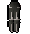 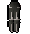![[image]](../../img/main/kbase/armour/mage/skeletalhat.gif) ![[image]](../../img/main/kbase/armour/mage/skeletalboots.gif) ![[image]](../../img/main/kbase/armour/mage/skeletalgloves.gif) Skeletal Armour (m) |
Like splitbark armour, skeletal armour offers excellent melee Defence while suitably augmenting the wearer's Magic. This is, of course, at the cost of Defence against Ranged attacks. Body parts to make skeletal armour can be found by defeating the dagannoths on Waterbirth Island. |
|
![[image]](../../img/main/kbase/armour/barrows/ahrim_body.gif) 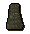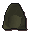 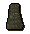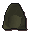Ahrim's Robes (m) |
Ahrim's robes are a very powerful thing to have as a mage. This is obtained by playing the Barrows. If you are lucky enough to receive Ahrim's robes and weapon, you will be rewarded with a set effect. For more information on the set effects, please refer to the Barrows Reward page. |
|
![[image]](../../img/main/kbase/armour/mage/elementalshield.gif) ![[image]](../../img/main/kbase/armour/mage/elementalbodybody.gif) Elemental Armour (m) (Elemental, mind, body) |
Elemental armour offers extra protection from Magic attacks for those going up against enemies known to use it. Elemental shields are also close to essential for fighting skeletal wyverns. |
|
![[image]](../../img/main/kbase/armour/mage/trail_items/mage_hat.gif) ![[image]](../../img/main/kbase/armour/mage/trail_items/mage_torso.gif) ![[image]](../../img/main/kbase/armour/mage/trail_items/mage_legs.gif) ![[image]](../../img/main/kbase/armour/mage/trail_items/mage_amulet.gif) Third Age Robes (m) |
Third Age mage armour has very high Magic attack and defence bonuses, as you would expect armours from this era to have. It doesn't offer protection from melee or Ranged attacks, but the powerful Third Age mages were more interested in wearing the best Magic-enhancing clothing they could find, as their own Ranged and melee allies kept the enemy at bay. | |
![[image]](../../img/main/kbase/combat/pvp/member/hood.gif) ![[image]](../../img/main/kbase/combat/pvp/member/robe_top.gif) ![[image]](../../img/main/kbase/combat/pvp/member/robe_bottom.gif) Zuriel's Robes (m) |
A mage of exceptional power, Zuriel once mastered the Ancient Magicks to a degree unmatched since. Much of his power remains in his robes, but this power and the exceptional age means that it decays rapidly. |

More articles in
Combat
|
|
|
Further Help
If this article does not help you, you may find the following sections of the RuneScape site helpful:
|
|